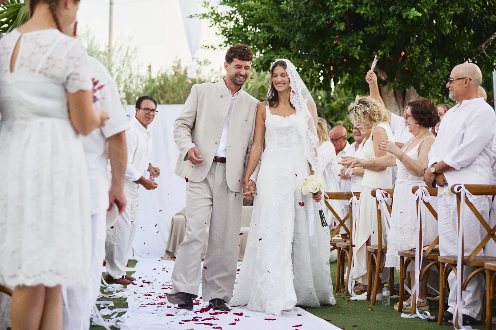
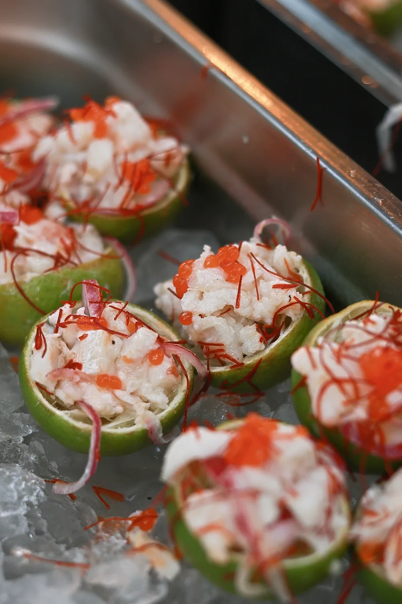
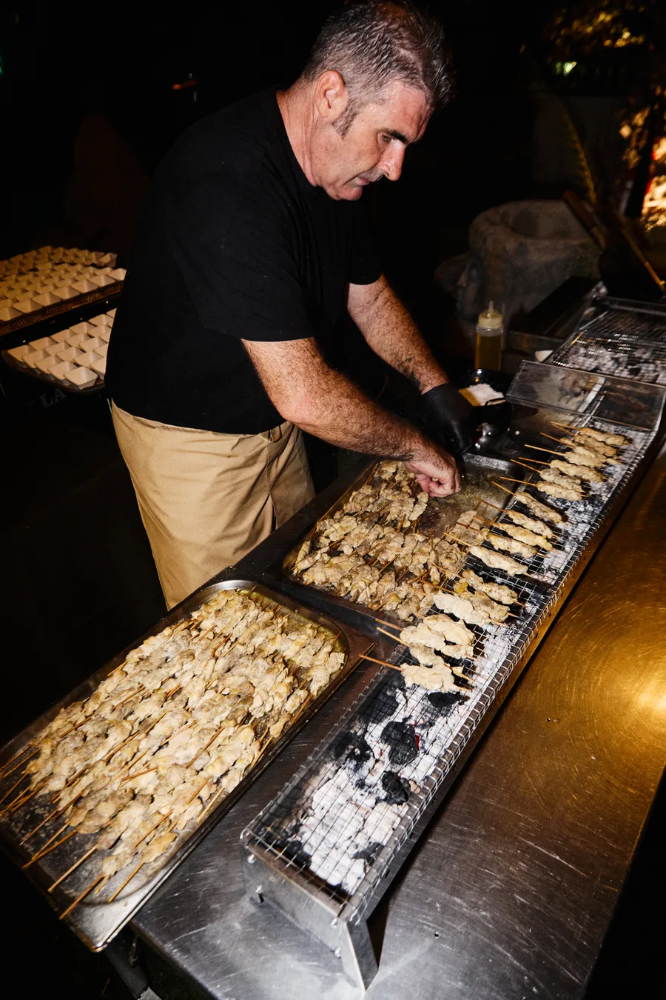
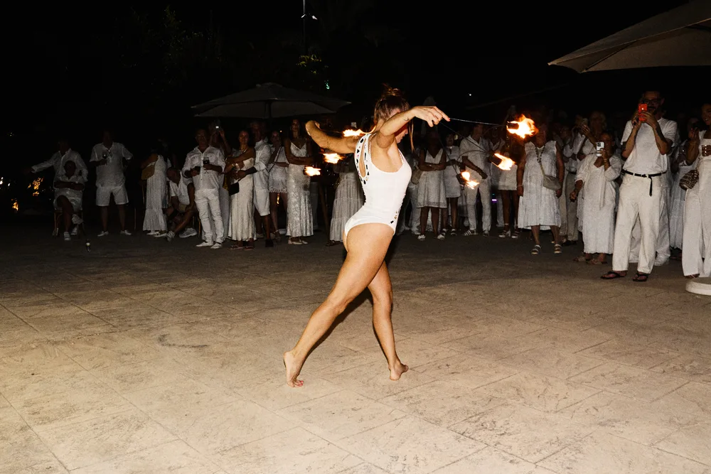

ESCUCHA. CREACIÓN. COMPROMISO.
01 / NUESTRA ESENCIA
Alrededor de la mesa.
Lejos de lo de siempre.
Cocina, espacio y hospitalidad. Celebramos bodas en Finca La Llaguna y llevamos nuestro catering a otros espacios. Siempre a partir de vuestra gente, vuestros gustos y vuestra manera de vivir el día.
Conocer Perigallo ↗
LA PERIGALLA 01 · ARCHIVO DE MARCA02 / BODAS
Vuestra gente.
Vuestro día.
Vuestra forma.
En Finca La Llaguna o en el espacio que elijáis. Definimos juntos la gastronomía y los momentos que darán forma a vuestra boda.
En nuestra finca.
Celebrad vuestra boda en Finca La Llaguna, en Crevillent.
En vuestro espacio.
Nos desplazamos con nuestro servicio de catering para bodas.
03 / GASTRONOMÍA
Todo empieza
por el gusto.
Un cóctel, un banquete, una mesa compartida. La cocina marca el ritmo y el formato se adapta a vuestra celebración.


04 / CELEBRACIONES
Hay mucho
que celebrar.
Un encuentro familiar, una ocasión privada o un evento de empresa. Encontramos el formato para reunir a vuestra gente.
Encontrar vuestro formato ↗
Cuando cae la noche. ↗05 / EXPERIENCIAS ABIERTAS AL PÚBLICO
Una noche.
Otra historia.
Cargando próximas experiencias…
06 / NUESTRA FORMA DE HACER
Escucha. Creación.
Compromiso.
- 01
Escucha.
Entender qué os importa, cómo queréis celebrar y qué necesitáis de nosotros.
- 02
Creación.
Convertir esa conversación en una propuesta gastronómica y una celebración con sentido.
- 03
Compromiso.
Acordar el alcance, acompañar el proceso y cuidar lo que hemos definido juntos.
07 / EL LUGAR
Finca
La Llaguna.
En Crevillent, Alicante. Un espacio para recorrer, imaginar y decidir juntos cómo vivir cada momento.
Conocer la finca ↗
EL PRIMER PASO ES CONOCERNOS
¿Lo imaginamos?↗Contadnos qué tenéis en mente.
Nosotros empezamos por escuchar.